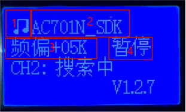
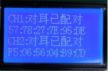
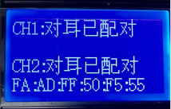
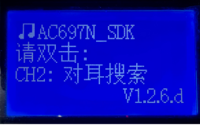

3.6. 蓝牙设备测试流程使用说明
3.6.1. 经典蓝牙设备测试流程说明
1、根据实际需求使能各类测试功能，设置好拨码开关功能，是否要测试通话、频偏
2、测试盒可以同时连接两个样机进行测试，建议待测试样机可以同时开启4以上个样机等待连接
3、连接上样机后1显示测试状态（音频图片表示测试播歌，电话图片表示测试通话），2显示样机名字，3显示样机频偏，4显示上下曲暂停音量加减按键
4、播歌测试完毕后，可以按样机暂停按键，然后进入通话测试，对样机麦说话进行通话测试，测试完毕按挂电话按键即可断开搜索下一个样机

3.6.2. 快速测试流程说明
1.拨码开关打开快速测试功能
2.同时开启4以上个样机等待连接
3.测试盒连接上样机后发命令给样机进入快速测试模式，客户在该模式要进入灯闪烁 提示
4.样机开启麦扩音功能，对面麦喊话，样机喇叭出声音
5.按样机按键发出按键音
6.测试完毕，关闭样机
3.6.3. BLE测试流程说明
1.拨码开关打开BLE测试功能，选择要测试主机还是从机（具体拨码开关选择 参考《 拨码开关功能说明 》章节）
2.如果需要进行频偏自动校正就打开频偏校正拨码开关
3.测试盒连上样机后发命令给样机进入BLE测试模式，连上之后默认进行频偏测试
4.频偏测试完成后，测试盒显示蓝牙名称（主机测试仅显示主机MAC地址）及频偏值（如果开启频偏自动校正功能，则频偏校准后会显示校准后的频偏）
5.按样机的按键测试盒会显示按键号
6.测试完毕后按测试盒对应通道的测试按键，断开样机连接，等待连接下一台样机
3.6.4. 对耳有线测试说明
使用条件
1.测试盒硬件版本为v2.2以上，且固件版本为v2.1.6以上,可以支持对耳测试接口。
2.对耳LDO引脚支持串口通讯（串口IO合绑）且LDOIN电容需小于103的样机，可以通过测试盒串口转接板与TWS样机连接。
功能支持
支持对耳在线快速配对
支持对耳快速连接及测试
使用说明
通过pc界面打开对耳配对或对耳测试开关，点击“保存到测试盒”，然后重启测试盒，测试盒进入“对耳搜索”界面。


如果仅打开“对耳配对使能”开关，则TWS配对成功后不进行连接测试，界面如下所示。

当仅打开“对耳测试使能”开关时，不进行TWS配对，只进行连接测试。
当同时打开“对耳配对使能”和“对耳测试使能”时，在进行连接测试的过程中同时进行配对。如果配对成功，在连接的过程中会出现“对耳已配对”的显示。

对耳配对判断
该配置需在“对耳配对使能”为1时有效。
当配置为1时，若tws sdk版本支持配返回配对信息时，在成功配对并返回正确配对信息时才可配对成功；返回错误配对信息时，会报错（报错界面如下图，仅开对耳配对显示界面如图a所示；对耳配对与对耳测试使能显示界面如图b所示）。
当配置为0时，对耳配对时，不会返回配对信息进行判断。

Note
如果耳机sdk版本还不支持返回配对信息，需将该配置配置0，否则无法进行对耳配对会报错，报错界面如下图，仅开对耳配对显示界面如图c所示；对耳配对与对耳测试使能显示界面如图d所示。
对耳配对蓝牙名匹配使能
该配置需在“对耳配对使能”为1时有效。
当配置为1时，若tws sdk版本支持蓝牙名匹配时，则左右耳机蓝牙名一致才可成功配对；出现左右耳蓝牙名不一致，会报错（报错界面如下图，仅开对耳配对显示界面如图a所示；对耳配对与对耳测试使能显示界面如图b所示）。
当配置为0时，对耳配对时，不会左右耳蓝牙名进行判断。

Note
如果耳机sdk版本还不支持蓝牙名匹配，需将该配置配置0，否则无法进行对耳配对。
对耳离仓蓝牙断开使能
该配置需在“对耳测试使能”为1时为效。
当配置为1时，耳机与测试盒建立蓝牙连接之后，从仓内取出时，测试盒会主动断开蓝牙连接。
当配置为0时，耳机与测试盒建立蓝牙连接之后，从仓内取出时，会保持蓝牙连接 。
3.6.5. 内置触摸灵敏度测试说明
V1.2.6.d添加内置触摸灵敏度测试使能配置项（
该配置需sdk支持）
当“内置触摸灵敏度测试使能”配置为0时，该测试项不使能。
当“内置触摸灵敏度测试使能”配置为1时，在测试盒建立经典蓝牙连接时，测试盒LCD界面会提醒进行对应操作，进行内置触摸灵敏度测试。
2.测试使用流程
测试场景一：将“有线串口模式配置”下的“测试使能”为1，利用串口通信建立经典蓝牙连接。
【1】当建立蓝牙连接后，显示“请出仓”，此时取出放在串口通信仓内耳机。

【2】取出耳机后，测试盒LCD提示“请双击”，此时要在5s内进行一次双击操作，当识别到双击动作时，测试会显示测试结果“√”；
若识别失败则会返回错误或者超时，测试盒显示“超时”或“错误”提示，并伴有“滴”一声提示。测试的结果有对应测试参数显示（第一数值为触摸变化量，第二数值为变化量百分比）



测试场景二：将“有线串口模式配置”下的“测试使能”为0，通过空中无线搜索建立经典蓝牙连接。蓝牙连接建立后，测试过程如测试场景一中第2步所示。
3.6.6. 无线麦测试模式使用说明
V1.2.6.e添加无线麦测试模式使能配置项（
该配置需sdk支持）

Note
采用adapter系列sdk开发的无线麦方案，由于采用非标准蓝牙连接，无法直接与测试盒建立连接进行频偏测试及无线升级，故增加该配置项;
根据sdk的应用形态，选择对应的模式，每一种模式都与sdk具体配置相关，需要正确选择与sdk配置一致的模式，才能与测试盒建立无线连接。
配置项介绍
默认值为“WIRELESS_MIC_MODE_NONE”，即不启动无线麦测试模式。其他配置选项需对应sdk相应配置，具体对应关系如下表所示：
配置选项 |
CONFIG_ADATER_APP_SEL |
CONFIG_ADAPTER_WIRELESS_ROLE_SEL |
WIRELESS_MIC_BT_MODE |
config_rf_oob |
|---|---|---|---|---|
WIRELESS_MIC_1T1_TX_BT_MODE_1_OOB_1 |
CONFIG_ADAPTER_APP_WIRELESS_MIC_1T1 |
tx_1t1 |
1 |
1 |
WIRELESS_MIC_1T1_RX_BT_MODE_1_OOB_1 |
CONFIG_ADAPTER_APP_WIRELESS_MIC_1T1 |
rx_1t1 |
1 |
1 |
WIRELESS_MIC_1T1_TX_BT_MODE_1_OOB_0 |
CONFIG_ADAPTER_APP_WIRELESS_MIC_1T1 |
tx_1t1 |
1 |
0 |
WIRELESS_MIC_1T1_RX_BT_MODE_1_OOB_0 |
CONFIG_ADAPTER_APP_WIRELESS_MIC_1T1 |
rx_1t1 |
1 |
0 |
WIRELESS_MIC_2T1_TX_BT_MODE_0_OOB_0 |
CONFIG_ADAPTER_APP_WIRELESS_MIC_2T1 |
tx_2t1 |
当配置ENABLE时， |
0 |
WIRELESS_MIC_2T1_RX_BT_MODE_0_OOB_0 |
CONFIG_ADAPTER_APP_WIRELESS_MIC_2T1 |
rx_2t1 |
当配置ENABLE时， |
0 |
WIRELESS_MIC_DUPLEX_DONGLE |
CONFIG_ADAPTER_APP_WIRELESS_DUPLEX |
duplex_dongle |
当配置ENABLE时， |
0 |
WIRELESS_MIC_DUPLEX_EARPHONE |
CONFIG_ADAPTER_APP_WIRELESS_DUPLEX |
duplex_earphone |
当配置ENABLE时， |
0 |